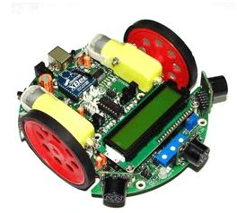

IIT Bombay internship · Estimation & embedded control
EKF-SLAM and embedded robot navigation
Joint robot-pose and landmark estimation in MATLAB, with a separate embedded navigation exercise.

Overview
An internship project investigating joint robot-pose and landmark estimation through EKF-SLAM simulation. A separate embedded implementation explores obstacle avoidance and encoder-based motion feedback on a SPARK-V robot.
Technical contributions
- Probabilistic estimation. Adapted a MATLAB EKF-SLAM simulator to estimate robot pose and landmark positions together. Implemented prediction and measurement updates with Jacobian-based uncertainty propagation.
- Landmark association. Applied uncertainty-aware nearest-neighbor matching with Mahalanobis gating to associate range–bearing measurements with landmarks. Examined how revisiting landmarks changes uncertainty in the estimated map.
- Embedded navigation. Extended simulated reactive steering and separately programmed ultrasonic obstacle avoidance and encoder feedback in Embedded C. The SPARK-V implementation used its ATmega16 controller for room-traversal experiments.
Results
Repeated landmark observations reduced map uncertainty in simulation. The SPARK-V robot separately demonstrated room traversal with obstacle avoidance.
A closer look


Read more
Joint internship project with Alden J. Joseph. The MATLAB study adapted EKF-SLAM code credited to Tim Bailey and Juan Nieto in the report.